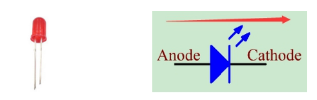
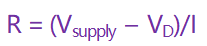

2.2 LED¶
Überblick¶
In dieser Lektion lernen Sie den Umgang mit LED. LED ist eine übliche Licht emittierende Vorrichtung, die nach dem Prinzip der Lichtemission nach der Rekombination von Elektronen und Löchern arbeitet, um Energie freizusetzen. Diese Komponente ist in der heutigen Gesellschaft weit verbreitet, wie z. B. Beleuchtung, Anzeigetafel, medizinische Geräte usw.
Erforderliche Komponenten¶

Komponenteneinführung¶
Halbleiter-Leuchtdiode ist eine Art von Komponente, die elektrische Energie über PN-Übergänge in Lichtenergie umwandeln kann. Je nach Wellenlänge kann es in Laserdioden, Infrarot-Leuchtdioden und sichtbare Leuchtdioden unterteilt werden, die üblicherweise als Leuchtdioden (LED) bezeichnet werden.
Die Diode hat eine unidirektionale Leitfähigkeit, sodass der Stromfluss so ist, wie der Pfeil im Symbol des Schaltkreises angibt. Sie können die Anode nur mit einer positiven Leistung und die Kathode mit einer negativen versorgen. Somit leuchtet die LED auf.
Eine LED hat zwei Pins. Der längere ist die Anode und der kürzere die Kathode. Achten Sie darauf, sie nicht umgekehrt anzuschließen. Die LED weist einen festen Durchlassspannungsabfall auf, sodass sie nicht direkt an den Stromkreis angeschlossen werden kann, da die Versorgungsspannung den Spannungsabfall überschreiten und die LED durchbrennen kann. Die Durchlassspannung der roten, gelben und grünen LED beträgt 1,8 V und die der weißen 2,6 V. Die meisten LEDs können einem maximalen Strom von 20 mA standhalten. Daher müssen wir einen Strombegrenzungswiderstand in Reihe schalten.
Die Formel des Widerstandswertes lautet wie folgt:
R steht für den Widerstandswert des Strombegrenzungswiderstands, V für die Spannungsversorgung, VD für den Spannungsabfall und I für den Arbeitsstrom der LED.
Wenn wir für die rote LED eine Spannung von 5 bereitstellen, sollte der Mindestwiderstand des Strombegrenzungswiderstands betragen: (5V-1.8v)/20mA = 160Ω. Daher benötigen Sie einen Widerstand von 160 Ω oder mehr, um die LED zu schützen. Es wird empfohlen, den im Kit enthaltenen 220Ω-Widerstand zu verwenden.
Schematische Darstellung¶

Fritzing Circuit¶
In diesem Beispiel verwenden wir Pin 9, um die LED anzusteuern. Führen Sie eine Seite des Widerstands in den digitalen Pin 9 ein und verbinden Sie den längeren Pin (eine positive Elektrode, die als Anode bezeichnet wird) der LED mit der anderen Seite des Widerstands. Erweitern Sie den kürzeren Stift (eine negative Elektrode, die als Kathode bezeichnet wird) der LED zu GND.

Code¶
Beispiel 1:
Wenn Sie die Codes auf die Mega2560-Karte hochgeladen haben, blinkt die LED. Informationen zur Erläuterung des Detailcodes finden Sie in Teil 1-1.2 Digital Write.
Beispiel 2:
Nachdem Sie den Code auf die Mega2560-Karte hochgeladen haben, können Sie sehen, dass die LED leuchtet, dann erlischt, sich einschaltet und dann wieder erlischt… Der Zyklus wird auf diese Weise fortgesetzt. Informationen zur Erläuterung des Detailcodes finden Sie in Teil 1-1.3 Analog Write.
Phänomen Bild¶